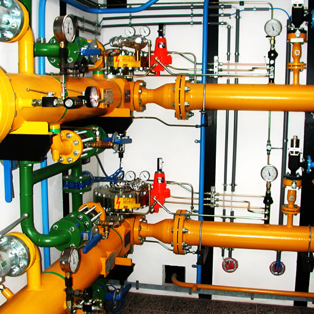
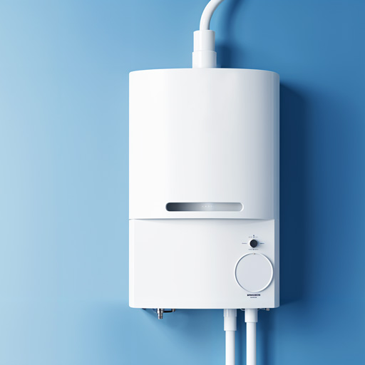
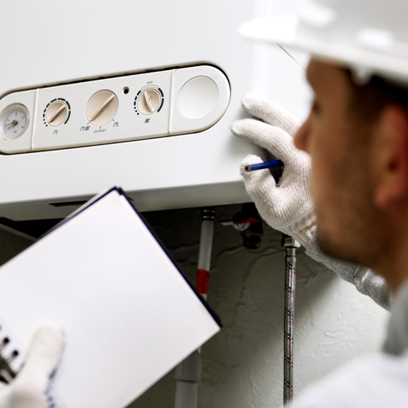
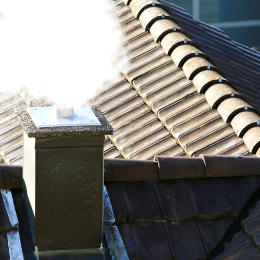

Usluge koje pružamo

Tehnička kontrola unutrašnje gasne instalacije
- Pregled cevne instalacije, gasnih slavina, gasnih creva
- Pregled svih gasnih aparata
- Provera nepropusnosti na mestima spajanja gasnim detektorom
- Provera i pregled dimovodne instalacije
- Izdavanje Zapisnika o tehničkoj kontroli unutrašnje gasne instalacije

Servisni pregled konvencionalnih i kondenzacionih kotlova
- Kontrola funkcionalnosti i ispravnosti glavnog gasnog ventila
- Ispitivanje ispravnosti kotlovske instalacije (gasne i vodene) na nepropusnost
- Kontrola ispravnosti i funkcionalnosti sigurnosne, električne i merno-regulacione opreme kotla
- Kontrola ispravnosti kotlovske sigurnosne opreme vodene instalacije (ekspanzione posude, ukoliko postoji)
- Čišćenje i pregled primarnog izmenjivača, plamenika, startne i jonizacione elektrode i dimovoda
- Kontrola ispravnosti procesa potpale, startnog i glavnog plamena
- Podešavanje optimalnog rada kotla (merenjem gasnih produkata kod kondezacionih kotlova), sa izdavanjem izveštaja

Servisni pregled gasnih peći
- Kontrola ispravnosti i funkcionalnosti glavnog gasnog ventila
- Ispitivanje ispravnosti i nepropusnosti instalacije gasne peći
- Ispitivanje funkcionalnosti i ispravnosti sigurnosnih elemenata gasne peći
- Kontrola stanja plamenika, glavne i pilot dizne i njihovo čišćenje
- Podešavanje optimalnog rada gasne peći sa izdavanjem izveštaja

Pregled dimovodne instalacije
- Kontrola funkcionalnosti i ispravnosti dimovodne instalacije u skladu sa tehničkim propisima
- Izdavanje izveštaja o izvršenoj kontroli, odnosno potvrdu (atest) o ispravnosti dimovodne instalacije